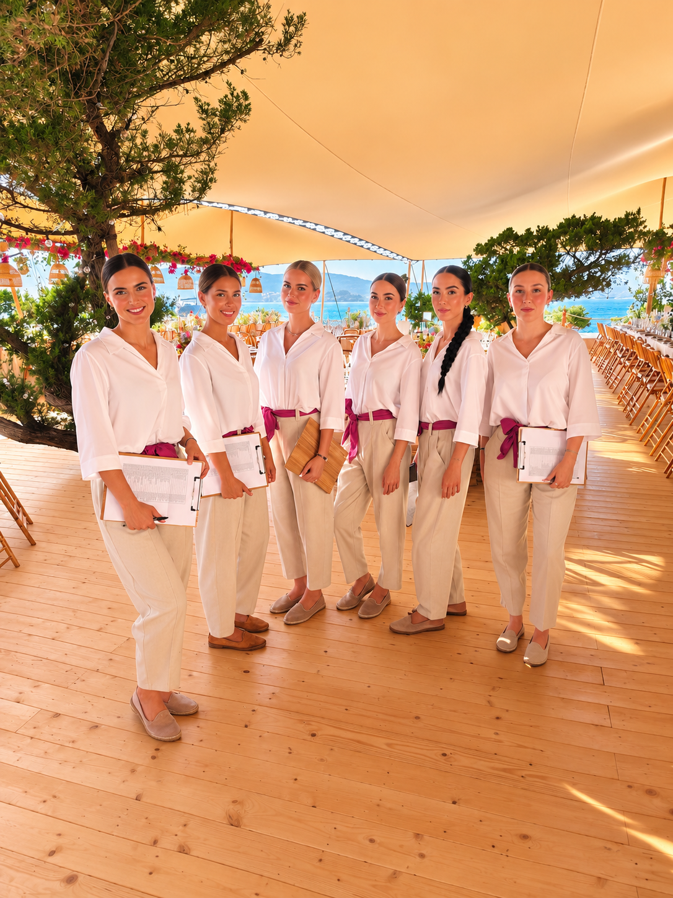

Hostesses, stewards and models for Porto Cervo, five-star hotels, the yachting world and high-profile weddings.
Quote within 24 hoursBehind the agency are 13 years of experience in events and five years of structured activity, with a network of over 800 professionals. In Sardinia we cover private events, yachting hospitality, brand activations and receptions in the island's villas and hotels.
In Sardinia the season lasts a few weeks and concentrates a density of luxury events unmatched in Italy. Between June and September the Costa Smeralda hosts openings, regattas, private parties and international weddings, all within the same narrow window.
Here the constraint is not budget but availability: qualified staff in high season are the island's scarcest resource. We work on advance bookings and, when needed, bring teams from the mainland handling travel and accommodation ourselves.
Reception for private parties, seasonal openings, dinners and club evenings between Porto Cervo, Porto Rotondo and Poltu Quatu.
Hostesses aboard, quayside welcome desks, owner reception and assistance during sailing events.
Guest reception, list management, timing coordination and support to the wedding planner for international ceremonies.
Support staff for events, corporate congresses and themed evenings in the island's high-end properties.
Beach club presence, launch events and visibility at key points along the coast.
Accreditation, welcome desk and assistance for corporate conventions and incentive trips.
English, Russian, Arabic, French and German: the coastal clientele is international and highly demanding.
Photographers and videographers for shoots, campaigns and event documentation.
Period, location on the island, headcount and languages. We reply within one working day.
You receive profiles available for those dates, with experience in high-end settings. You confirm.
We handle contracts, any travel and accommodation, uniforms and briefing.
The coordinator follows the evening from set-up to close and manages every change of plan.
In high season availability, length of engagement and any travel and accommodation for mainland teams all count. We set everything out clearly in the quote.
For July and August in Costa Smeralda we suggest moving two or three months ahead. It is the period when qualified staff run out first.
Yes. Outside the summer months we follow congresses, corporate events and exhibitions in Cagliari, Olbia and across the island.
Yes, with staff used to nautical settings, discretion protocols and confined spaces.
Yes. Guest reception, list management, timing and liaison with wedding planners and caterers.
It is a frequent request along the coast and one we cover regularly, alongside English, French and German.
Both. We favour local profiles to contain costs, but at peak times we bring teams from the mainland and handle travel and accommodation.
The whole island: Costa Smeralda, Olbia, Alghero, Cagliari and the south.
Yes. All professionals are regularly engaged, including for short seasonal assignments.
We cover it. In high season we keep a dedicated reserve precisely to guarantee continuity.
From Porto Cervo to Cagliari, all season long. See also the other cities.
Request a quote